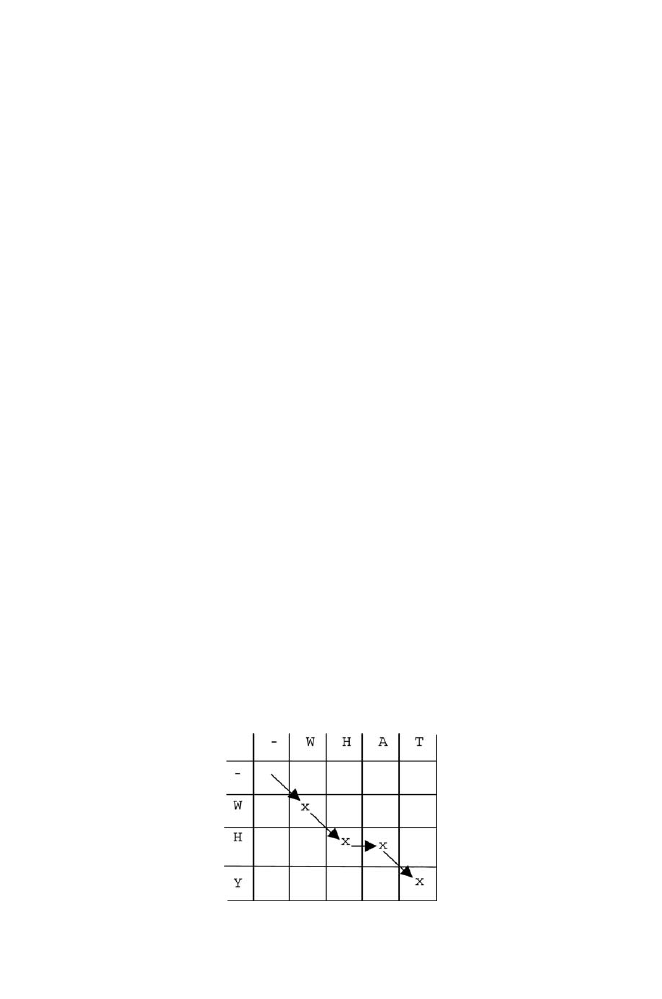

146
6 Sequence Alignment
Before proceeding, note that we may align nucleic acids with each other
or polypeptide sequences with each other. The latter case raises a number of
additional issues because of constraints on protein structures and the genetic
code, so it will be discussed in the next chapter.
6.2 Basic Example
Before proceeding to a rigorous description, we will introduce the “flavor” of
the process with a simple “toy” example. Suppose that we wish to align
WHAT
with
WHY
. Our goal is to find the highest-scoring alignment. This means that
we will have to devise a scoring system to characterize each possible alignment.
One possible alignment solution is
WHAT
WH
-
Y
We need a rule to tell us how to calculate an alignment score that will,
in turn, allow us to identify which alignment is best. Let’s use the following
scores for each instance of match, mismatch, or indel:
identity (match)
+1
substitution (mismatch)
−
µ
indel
−
δ
The minus signs for substitutions and indels assure that alignments with
many substitutions or indels will have low scores. We define the score
S
as
the sum of individual scores at each position:
S
(
WHAT
/
WH
−
Y
) = 1 + 1
−
δ
−
µ.
There is a more general way of describing the scoring process (not nec-
essary for “toy” problems such as the one above). We write the target se-
quence (
WHY
) and the search space (
WHAT
) as rows and columns of a ma-
trix: